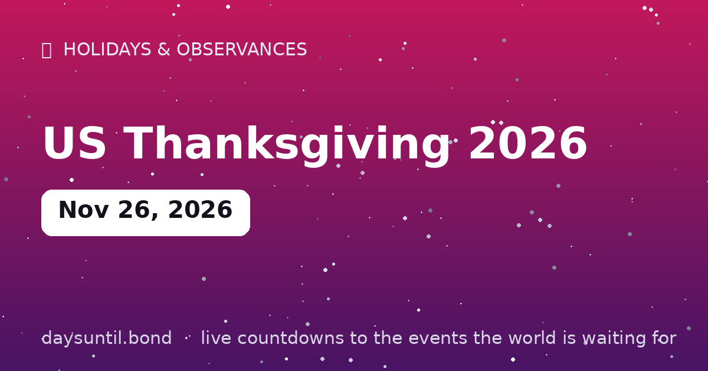

How Many Days Until US Thanksgiving 2026?
US Thanksgiving 2026 falls on Thursday, November 26, 2026.
As of October 24, 2026: 33 days to go — 4 weeks and 5 days, 24 weekdays (9 weekend days), about 792 hours.

Quick facts
| Date | Thursday, November 26, 2026 |
|---|---|
| Category | Holiday / observance |
About US Thanksgiving 2026
US Thanksgiving 2026 falls on Thursday, November 26, 2026. The fourth Thursday of November: turkey, gratitude, football and complicated family logistics — America's most-traveled holiday week.
The live counter above updates every second and automatically switches to 'days since' once the day arrives.
How the Thanksgiving date is determined
US Thanksgiving is the fourth Thursday of November — a rule set in federal law in 1941 after a decade of confusion in which some states celebrated the last Thursday of the month and retailers lobbied for an earlier date to lengthen the Christmas shopping season. The fourth Thursday falls between November 22 and November 28.
In 2026 the first Thursday of November is November 5, so the fourth is Thursday November 26. That puts it on the late end of the range, which has two knock-on effects: Black Friday lands on November 27 with only 28 days to Christmas, and the holiday week sits close enough to December that Advent — beginning November 29, 2026 — starts two days later.
Why Thanksgiving is America's busiest travel week
Thanksgiving is the most-travelled holiday period in the United States, ahead of both Christmas and the summer peak, because the holiday is fixed to a Thursday rather than a floating date: almost everyone gets a four-day block, and almost everyone uses it to go somewhere. The heaviest travel days are the Wednesday before and the Sunday after — the Sunday is typically the single busiest airport day of the year.
In 2026 that means Tuesday November 24 and Wednesday November 25 are the pressure points outbound, and Sunday November 29 the return. Anyone who can move to Thanksgiving Day itself — Thursday November 26 — usually finds the quietest terminals and the cheapest fares of the week.
Thanksgiving, Black Friday and Cyber Monday in 2026
The three dates are mechanically linked, which makes them easy to plan around once you know the Thursday: Thanksgiving is November 26, Black Friday is the next day, November 27, Small Business Saturday is November 28, and Cyber Monday is November 30. The whole retail peak takes place inside four days.
Because Christmas 2026 is on a Friday, the last full working week before the holiday ends Friday December 18 — leaving 25 days from Cyber Monday for anything that has to be delivered.
Thanksgiving dates through 2030
| Year | Thanksgiving | Black Friday | Cyber Monday |
|---|---|---|---|
| 2026 | November 26 | November 27 | November 30 |
| 2027 | November 25 | November 26 | November 29 |
| 2028 | November 23 | November 24 | November 27 |
| 2029 | November 22 | November 23 | November 26 |
| 2030 | November 28 | November 29 | December 2 |
What actually happened at 'the first Thanksgiving'
The 1621 gathering at Plymouth was a three-day harvest meal shared by roughly 50 English colonists and about 90 Wampanoag men, and it was not called Thanksgiving, was not repeated annually, and was not a formal treaty. The Wampanoag, led by Massasoit, appear to have arrived after hearing gunfire and stayed three days; the surviving accounts — two of them, both English — describe deer, fowl and a great deal of uncertainty on both sides.
The holiday as we have it is a nineteenth-century construction. Sarah Josepha Hale campaigned for a national day of thanks for nearly twenty years in magazines; Abraham Lincoln proclaimed it in 1863, in the middle of the Civil War; and Congress fixed it to the fourth Thursday of November in 1941, ending a decade in which some states used the last Thursday and retailers lobbied for an earlier date. The Pilgrim story was attached to the holiday largely in the 1890s.
The traditions that came later
Almost everything recognisable about the day postdates the holiday itself. The Macy's Thanksgiving Day Parade began in 1924 as a Christmas promotion and now draws millions; football on Thanksgiving dates to the same era; and the presidential turkey pardon, often described as ancient, was only formalised in 1989, though turkeys had been presented to presidents since the 1870s.
Volunteering has quietly become the other tradition — Thanksgiving is one of the two busiest days of the year for food banks and meal services in the United States, alongside Christmas Day.
Thanksgiving outside the United States
Canada has had a Thanksgiving since 1879, but on the second Monday of October — October 12, 2026 — because the harvest arrives earlier at its latitude. The holiday is lower-key: a long weekend, no Thursday, no parade on the American scale, and no shopping event attached to the following day.
Three other places celebrate a version of it: Liberia (first Thursday of November), Norfolk Island (last Wednesday of November), and Grenada (October 25, marking the 1983 intervention). The rest of the world mostly encounters the date as the day before Black Friday.
When to start cooking
The binding constraint is almost always the thaw, not the oven. A frozen turkey needs roughly 24 hours in the refrigerator for every 4 to 5 pounds, so a 14-pound bird has to go into the fridge on Sunday November 22 for the 2026 holiday — and a 20-pound bird needs most of five days, which means the weekend of the 21st. Cold-water thawing is faster but requires changing the water every 30 minutes and cooking immediately afterwards.
Everything else can be pulled forward. Brine or dry-brine on the Tuesday; make stocks, cranberry sauce and pie dough on the Wednesday; and leave only the turkey, the mash and the gravy for Thursday morning. A whole-meal plan works backwards from serving time rather than forwards from the shopping list — which is why the classic mistake is not an undercooked bird but a cooked one with nothing ready to go with it.
The four days that follow
Thanksgiving is the anchor for a chain of dates that are all defined relative to it. Black Friday is the next day, November 27. Small Business Saturday is November 28, a 2010 invention aimed at independent retailers. Cyber Monday is November 30. And Giving Tuesday — the most recent of the four, started in 2012 — falls on December 1, 2026.
That last one is worth knowing because it is the only one of the four with no commercial purpose. If you are planning to donate this year, the Tuesday after Thanksgiving is when a very large share of employers run matching programmes, which effectively doubles whatever you give.
Your US Thanksgiving 2026 countdown milestones
It is easier to plan against fixed points than against a number that moves. These are the dates on which the countdown to US Thanksgiving 2026 passes each marker between now and the day itself — the last one falls on Wednesday 25 November, when there will be 1 day left.
| Milestone | Day | Date | Remaining |
|---|---|---|---|
| 30 days | Tuesday | 27 October 2026 | 30 days to go |
| 14 days | Thursday | 12 November 2026 | 14 days to go |
| 7 days | Thursday | 19 November 2026 | 7 days to go |
| 3 days | Monday | 23 November 2026 | 3 days to go |
| 1 days | Wednesday | 25 November 2026 | 1 day to go |
How the remaining time breaks down
33 days is the headline, but it is rarely the number that helps. 24 of those are weekdays and 9 fall on a weekend, which is the split that matters if you are planning around work. It is 4 weeks and 5 days, or roughly 1.1 months, or about 792 hours.
| Unit | Until US Thanksgiving 2026 |
|---|---|
| Days | 33 |
| Weeks | 4 weeks and 5 days |
| Months (approx) | 1.1 |
| Weekdays | 24 |
| Weekend days | 9 |
| Hours | 792 |
| Sleeps | 33 |
Working days are Monday to Friday and do not subtract public holidays, which vary by country and employer — the full month-by-month split is on our weekday page for US Thanksgiving 2026.